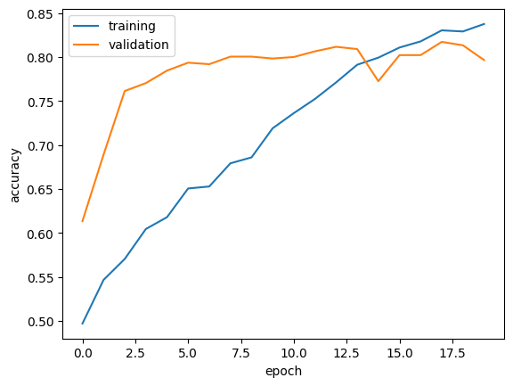
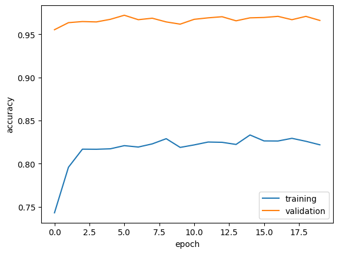

import os
import keras
from keras import utils, datasets, layers, models
import tensorflow_datasets as tfds
import tensorflow as tf
import matplotlib.pyplot as plt
import numpy as np
import pandas as pd
import randomImage Classification
By: Shaina Wang
In this blog post, you will be learning how to create different image classification modles in Keras to classify cats and dogs.
To do so, let us first import the important libraries to build our models!
After importing all libarires, we will be using the tensorflow_datasets to retrieve the dataset on cats vs dogs for this example. Many code in the blog was inspired by the following website. If you would like to learn more, please reference the following link: https://www.tensorflow.org/tutorials/images/transfer_learning.
We will be spliting the data by 40% for training, 10% for validation, and 10% for the test. The rest of the dataset will not be used.
train_ds, validation_ds, test_ds = tfds.load(
"cats_vs_dogs",
# 40% for training, 10% for validation, and 10% for test (the rest unused)
split=["train[:40%]", "train[40%:50%]", "train[50%:60%]"],
as_supervised=True, # Include labels
)
print(f"Number of training samples: {train_ds.cardinality()}")
print(f"Number of validation samples: {validation_ds.cardinality()}")
print(f"Number of test samples: {test_ds.cardinality()}")Downloading and preparing dataset 786.67 MiB (download: 786.67 MiB, generated: 1.04 GiB, total: 1.81 GiB) to /root/tensorflow_datasets/cats_vs_dogs/4.0.1...
Dataset cats_vs_dogs downloaded and prepared to /root/tensorflow_datasets/cats_vs_dogs/4.0.1. Subsequent calls will reuse this data.
Number of training samples: 9305
Number of validation samples: 2326
Number of test samples: 2326WARNING:absl:1738 images were corrupted and were skippedIn the following code chunk, we will be resizing the images. This is to allow for a constant size between all images, as some images have different sizes.
resize_fn = keras.layers.Resizing(150, 150)
train_ds = train_ds.map(lambda x, y: (resize_fn(x), y))
validation_ds = validation_ds.map(lambda x, y: (resize_fn(x), y))
test_ds = test_ds.map(lambda x, y: (resize_fn(x), y))Since we are working with very big datasets, we will be using the following code chunk to speed up the time for reading the data.
from tensorflow import data as tf_data
batch_size = 64 # amount of data points pulled from directory
train_ds = train_ds.batch(batch_size).prefetch(tf_data.AUTOTUNE).cache()
validation_ds = validation_ds.batch(batch_size).prefetch(tf_data.AUTOTUNE).cache()
test_ds = test_ds.batch(batch_size).prefetch(tf_data.AUTOTUNE).cache()Let’s experiment with how we can work with the data. Specifically, how can we see what images we are using. Let us define a function that will create two-row visualization. The first row will consist of three random pictures of cats from our dataset. The second row will consist of three random random pictures of dogs!
def visualize(dataset, n) :
fig, axes = plt.subplots(2, 3, figsize=(10, 10)) # setting the plot grids
for i, (images, labels) in enumerate(dataset.take(n)):
ncats = 0 # current number of cats on plot
ndogs = 0 # current number of dogs on plot
for image, label in zip(images, labels):
if label == 0 and ncats < 3:
axes[0, ncats].imshow(image.numpy().astype("uint8")) # adding cat
axes[0, ncats].set_title('Cat')
axes[0, ncats].axis("off")
ncats = ncats + 1
elif label == 1 and ndogs < 3:
axes[1, ndogs].imshow(image.numpy().astype("uint8")) # adding dog
axes[1, ndogs].set_title('Dog')
axes[1, ndogs].axis("off")
ndogs = ndogs + 1
plt.show()visualize(train_ds, random.randint(1,64))
Check Label Frequencies
labels_iterator= train_ds.unbatch().map(lambda image, label: label).as_numpy_iterator()Let’s look at the number of dogs and cats in our dataset. The label 0 corresponds to a cat, while label 1 corresponds to a dog. By figuring out the number of cats and dogs, we can have a general idea of our baseline machine learning model.
n_cat = 0
n_dog = 0
for label in labels_iterator:
if label == 0: # Cat label
n_cat = n_cat + 1
elif label == 1: # Dog label
n_dog = n_dog + 1
print("Num of cat:", n_cat)
print("Number of dog:", n_dog)Num of cat: 4637
Number of dog: 4668Looking at the results, we see that there seems to be a 50% accuracy Since the amount of dogs is 50.17% and the amount of cats is 49.83%. Therefore, we should aim for the following models we create to get an accuracy over 50%.
First Model: Keras Squential
Let’s create out first model using keras.Squential. We will be using 3 Conv2D layers, 2 MaxPooling2D layers, 1 Flatten layer, 2 Dense layers, and 1 Dropout layer.
model1 = models.Sequential([
layers.Input((150, 150, 3)),
layers.Conv2D(32, (3, 3), activation='relu'),
layers.MaxPooling2D((2, 2)),
layers.Conv2D(32, (3, 3), activation='relu'),
layers.MaxPooling2D((2, 2)),
layers.Conv2D(64, (3, 3), activation='relu'),
layers.Flatten(),
layers.Dense(64, activation='relu'),
layers.Dense(10),
layers.Dropout(0.5)
])We have completed our first model! Let’s take a look at our summary.
model1.summary()Model: "sequential"
_________________________________________________________________
Layer (type) Output Shape Param #
=================================================================
conv2d (Conv2D) (None, 148, 148, 32) 896
max_pooling2d (MaxPooling2 (None, 74, 74, 32) 0
D)
conv2d_1 (Conv2D) (None, 72, 72, 32) 9248
max_pooling2d_1 (MaxPoolin (None, 36, 36, 32) 0
g2D)
conv2d_2 (Conv2D) (None, 34, 34, 64) 18496
flatten (Flatten) (None, 73984) 0
dense (Dense) (None, 64) 4735040
dense_1 (Dense) (None, 10) 650
dropout (Dropout) (None, 10) 0
=================================================================
Total params: 4764330 (18.17 MB)
Trainable params: 4764330 (18.17 MB)
Non-trainable params: 0 (0.00 Byte)
_________________________________________________________________model1.compile(optimizer='adam',
loss=keras.losses.SparseCategoricalCrossentropy(from_logits=True),
metrics=['accuracy'])history = model1.fit(train_ds,
epochs=20,
validation_data=validation_ds)Epoch 1/20
146/146 [==============================] - 17s 69ms/step - loss: 9.6262 - accuracy: 0.5069 - val_loss: 0.6614 - val_accuracy: 0.6307
Epoch 2/20
146/146 [==============================] - 4s 31ms/step - loss: 1.3889 - accuracy: 0.5560 - val_loss: 0.6517 - val_accuracy: 0.6350
Epoch 3/20
146/146 [==============================] - 4s 30ms/step - loss: 1.3208 - accuracy: 0.5940 - val_loss: 0.6425 - val_accuracy: 0.6664
Epoch 4/20
146/146 [==============================] - 4s 30ms/step - loss: 1.2623 - accuracy: 0.6261 - val_loss: 0.6331 - val_accuracy: 0.6905
Epoch 5/20
146/146 [==============================] - 4s 31ms/step - loss: 1.1927 - accuracy: 0.6688 - val_loss: 0.6317 - val_accuracy: 0.7072
Epoch 6/20
146/146 [==============================] - 4s 30ms/step - loss: 1.1432 - accuracy: 0.7030 - val_loss: 0.6756 - val_accuracy: 0.6956
Epoch 7/20
146/146 [==============================] - 4s 31ms/step - loss: 1.1319 - accuracy: 0.7094 - val_loss: 0.7739 - val_accuracy: 0.7025
Epoch 8/20
146/146 [==============================] - 5s 31ms/step - loss: 1.1219 - accuracy: 0.7193 - val_loss: 0.8208 - val_accuracy: 0.6883
Epoch 9/20
146/146 [==============================] - 5s 32ms/step - loss: 1.0819 - accuracy: 0.7387 - val_loss: 0.7523 - val_accuracy: 0.7008
Epoch 10/20
146/146 [==============================] - 5s 35ms/step - loss: 1.0193 - accuracy: 0.7666 - val_loss: 0.8239 - val_accuracy: 0.7008
Epoch 11/20
146/146 [==============================] - 5s 34ms/step - loss: 1.0131 - accuracy: 0.7785 - val_loss: 0.8924 - val_accuracy: 0.6991
Epoch 12/20
146/146 [==============================] - 5s 31ms/step - loss: 0.9589 - accuracy: 0.8035 - val_loss: 1.0549 - val_accuracy: 0.7038
Epoch 13/20
146/146 [==============================] - 5s 31ms/step - loss: 0.9469 - accuracy: 0.8128 - val_loss: 1.0034 - val_accuracy: 0.6965
Epoch 14/20
146/146 [==============================] - 5s 32ms/step - loss: 0.9401 - accuracy: 0.8145 - val_loss: 1.0947 - val_accuracy: 0.6896
Epoch 15/20
146/146 [==============================] - 5s 31ms/step - loss: 0.9230 - accuracy: 0.8272 - val_loss: 1.2134 - val_accuracy: 0.6810
Epoch 16/20
146/146 [==============================] - 5s 31ms/step - loss: 0.9295 - accuracy: 0.8182 - val_loss: 1.2677 - val_accuracy: 0.6870
Epoch 17/20
146/146 [==============================] - 5s 31ms/step - loss: 0.9555 - accuracy: 0.8219 - val_loss: 1.3564 - val_accuracy: 0.6788
Epoch 18/20
146/146 [==============================] - 4s 31ms/step - loss: 0.9434 - accuracy: 0.8216 - val_loss: 1.3587 - val_accuracy: 0.6745
Epoch 19/20
146/146 [==============================] - 5s 31ms/step - loss: 0.9548 - accuracy: 0.8208 - val_loss: 1.3813 - val_accuracy: 0.6690
Epoch 20/20
146/146 [==============================] - 4s 31ms/step - loss: 0.9582 - accuracy: 0.8212 - val_loss: 1.4138 - val_accuracy: 0.6831plt.plot(history.history["accuracy"], label = "training")
plt.plot(history.history["val_accuracy"], label = "validation")
plt.gca().set(xlabel = "epoch", ylabel = "accuracy")
plt.legend()
Accuracy of the model was between 62% to 68%, which is a lot better than the baseline of approximately 50%. Therefore, we performed about 12-18% better than our baseline which is a big improvement! However, look carefully at our plot. We can observe a little bit of overfitting since our training accuracy is much higher than the validation accuracy. Let’s try a different method and see if we can get a higher accuracy and prevent overfitting from occuring.
Model with Data Augmentation
In this model, we will be generating modifications of the same image for the training dataset. For example, let’s say we have an image of a dog. Even if the dog is flipped upside down or rotated 30 degrees, the image still represents a dog regardless. Therefore, let’s train the model to be able to tell these difference apart.
Let’s just take a random image in our dataset and make some changes to it!
for images, labels in train_ds.take(9):
image = images[0]
label = labels[0]Next, we will need to perform data augmentation. We want to flip our image horizontally and vertically and also give it a little rotation.
Remember to also add the image to a batch, or else it will only show up as pixel when trying to plot the original and new copies of the image!
Let’s also create a plot to see what the image originally looks like and what it looks like after applying the RandomFlip and RandomRotation.
data_augmentation = tf.keras.Sequential([
layers.RandomFlip("horizontal_and_vertical"),
layers.RandomRotation(0.2),
])
# Add the image to a batch.
image = tf.cast(tf.expand_dims(image, 0), tf.float32)
plt.figure(figsize=(10, 10))
for i in range(3):
augmented_image = data_augmentation(image)
ax = plt.subplot(1, 3, i + 1)
plt.imshow(augmented_image[0].numpy().astype("uint8"))
plt.axis("off")
plt.show()Now, we are able to apply what we used above and implement it into our new model. We will be adding RandomFlip and RandomRotation into our model and adding as the first two layers.
model2 = models.Sequential([
layers.RandomFlip("horizontal_and_vertical", input_shape=(150, 150, 3)), # Horizontal flip augmentation
layers.RandomRotation(0.2), # Random rotation augmentation
layers.Conv2D(32, (3, 3), activation='relu'),
layers.MaxPooling2D((2, 2)),
layers.Conv2D(32, (3, 3), activation='relu'),
layers.MaxPooling2D((2, 2)),
layers.Conv2D(64, (3, 3), activation='relu'),
layers.Flatten(),
layers.Dense(64, activation='relu'),
layers.Dense(10), # number of classes
layers.Dropout(0.5)
])Let’s generate a summary of our model.
model2.summary()Model: "sequential_2"
_________________________________________________________________
Layer (type) Output Shape Param #
=================================================================
random_flip_1 (RandomFlip) (None, 150, 150, 3) 0
random_rotation_1 (RandomR (None, 150, 150, 3) 0
otation)
conv2d_3 (Conv2D) (None, 148, 148, 32) 896
max_pooling2d_2 (MaxPoolin (None, 74, 74, 32) 0
g2D)
conv2d_4 (Conv2D) (None, 72, 72, 32) 9248
max_pooling2d_3 (MaxPoolin (None, 36, 36, 32) 0
g2D)
conv2d_5 (Conv2D) (None, 34, 34, 64) 18496
flatten_1 (Flatten) (None, 73984) 0
dense_2 (Dense) (None, 64) 4735040
dense_3 (Dense) (None, 10) 650
dropout_1 (Dropout) (None, 10) 0
=================================================================
Total params: 4764330 (18.17 MB)
Trainable params: 4764330 (18.17 MB)
Non-trainable params: 0 (0.00 Byte)
_________________________________________________________________model2.compile(optimizer='adam',
loss=keras.losses.SparseCategoricalCrossentropy(from_logits=True),
metrics=['accuracy'])
history = model2.fit(train_ds,
epochs=20,
validation_data=validation_ds)Epoch 1/20
146/146 [==============================] - 7s 35ms/step - loss: 16.2815 - accuracy: 0.4927 - val_loss: 0.7275 - val_accuracy: 0.5645
Epoch 2/20
146/146 [==============================] - 5s 33ms/step - loss: 1.4435 - accuracy: 0.5153 - val_loss: 0.7084 - val_accuracy: 0.6002
Epoch 3/20
146/146 [==============================] - 5s 33ms/step - loss: 1.4261 - accuracy: 0.5258 - val_loss: 0.6892 - val_accuracy: 0.6230
Epoch 4/20
146/146 [==============================] - 5s 34ms/step - loss: 1.4301 - accuracy: 0.5301 - val_loss: 0.6647 - val_accuracy: 0.6298
Epoch 5/20
146/146 [==============================] - 5s 33ms/step - loss: 1.4000 - accuracy: 0.5357 - val_loss: 0.6676 - val_accuracy: 0.6496
Epoch 6/20
146/146 [==============================] - 5s 35ms/step - loss: 1.4242 - accuracy: 0.5303 - val_loss: 0.6705 - val_accuracy: 0.6273
Epoch 7/20
146/146 [==============================] - 5s 33ms/step - loss: 1.3946 - accuracy: 0.5433 - val_loss: 0.6153 - val_accuracy: 0.6763
Epoch 8/20
146/146 [==============================] - 5s 33ms/step - loss: 1.3932 - accuracy: 0.5449 - val_loss: 0.6748 - val_accuracy: 0.6642
Epoch 9/20
146/146 [==============================] - 5s 33ms/step - loss: 1.3823 - accuracy: 0.5474 - val_loss: 0.6370 - val_accuracy: 0.6638
Epoch 10/20
146/146 [==============================] - 5s 35ms/step - loss: 1.3912 - accuracy: 0.5519 - val_loss: 0.6344 - val_accuracy: 0.7042
Epoch 11/20
146/146 [==============================] - 5s 33ms/step - loss: 1.3657 - accuracy: 0.5582 - val_loss: 0.5666 - val_accuracy: 0.7231
Epoch 12/20
146/146 [==============================] - 5s 32ms/step - loss: 1.3605 - accuracy: 0.5591 - val_loss: 0.6062 - val_accuracy: 0.6905
Epoch 13/20
146/146 [==============================] - 5s 36ms/step - loss: 1.3702 - accuracy: 0.5579 - val_loss: 0.5941 - val_accuracy: 0.7171
Epoch 14/20
146/146 [==============================] - 5s 33ms/step - loss: 1.3565 - accuracy: 0.5617 - val_loss: 0.6071 - val_accuracy: 0.6849
Epoch 15/20
146/146 [==============================] - 5s 34ms/step - loss: 1.3436 - accuracy: 0.5607 - val_loss: 0.5813 - val_accuracy: 0.7025
Epoch 16/20
146/146 [==============================] - 5s 33ms/step - loss: 1.3461 - accuracy: 0.5702 - val_loss: 0.5873 - val_accuracy: 0.6909
Epoch 17/20
146/146 [==============================] - 5s 34ms/step - loss: 1.3337 - accuracy: 0.5717 - val_loss: 0.5837 - val_accuracy: 0.6978
Epoch 18/20
146/146 [==============================] - 5s 33ms/step - loss: 1.3337 - accuracy: 0.5745 - val_loss: 0.6679 - val_accuracy: 0.6698
Epoch 19/20
146/146 [==============================] - 5s 36ms/step - loss: 1.3535 - accuracy: 0.5665 - val_loss: 0.5826 - val_accuracy: 0.7128
Epoch 20/20
146/146 [==============================] - 5s 33ms/step - loss: 1.3238 - accuracy: 0.5780 - val_loss: 0.5905 - val_accuracy: 0.7167plt.plot(history.history["accuracy"], label = "training")
plt.plot(history.history["val_accuracy"], label = "validation")
plt.gca().set(xlabel = "epoch", ylabel = "accuracy")
plt.legend()
Looking at our plot, we see that the accuracy has increased by a lot. The accuracy of model 2 ranged from 54% to 71%. This was not a huge improvement compared to model 1. The highest accuracy was around 68%. However, there does not appear to have any overfitting in our model 2, which is really good.
Model 3: Data Preprocessing
In this model, we will be edditing the RGB pixel values to be normalized between 0 and 1, or between -1 and 1. This will allow the model to be a lot faster since RGB pixel values range from 0 to 255. This will give the model a smaller range to work with.
i = keras.Input(shape=(150, 150, 3))
# The pixel values have the range of (0, 255), but many models will work better if rescaled to (-1, 1.)
# outputs: `(inputs * scale) + offset`
scale_layer = keras.layers.Rescaling(scale=1 / 127.5, offset=-1)
x = scale_layer(i)
preprocessor = keras.Model(inputs = i, outputs = x)Now that we have finished preprocesing our data. Let’s add it into our model. We should be putting preprocessor into the first layer of our model.
model3 = models.Sequential([
preprocessor,
layers.Conv2D(32, (3, 3), activation='relu'),
layers.MaxPooling2D((2, 2)),
layers.Conv2D(32, (3, 3), activation='relu'),
layers.MaxPooling2D((2, 2)),
layers.Conv2D(64, (3, 3), activation='relu'),
layers.MaxPooling2D((2, 2)),
layers.Conv2D(64, (3, 3), activation='relu'),
layers.Flatten(),
layers.Dense(64, activation='relu'),
layers.Dropout(0.2),
layers.Dense(10),
layers.Dropout(0.5)
])Let’s generate the summary!
model3.summary()Model: "sequential_7"
_________________________________________________________________
Layer (type) Output Shape Param #
=================================================================
model (Functional) (None, 150, 150, 3) 0
conv2d_19 (Conv2D) (None, 148, 148, 32) 896
max_pooling2d_13 (MaxPooli (None, 74, 74, 32) 0
ng2D)
conv2d_20 (Conv2D) (None, 72, 72, 32) 9248
max_pooling2d_14 (MaxPooli (None, 36, 36, 32) 0
ng2D)
conv2d_21 (Conv2D) (None, 34, 34, 64) 18496
max_pooling2d_15 (MaxPooli (None, 17, 17, 64) 0
ng2D)
conv2d_22 (Conv2D) (None, 15, 15, 64) 36928
flatten_7 (Flatten) (None, 14400) 0
dense_12 (Dense) (None, 64) 921664
dropout_8 (Dropout) (None, 64) 0
dense_13 (Dense) (None, 10) 650
dropout_9 (Dropout) (None, 10) 0
=================================================================
Total params: 987882 (3.77 MB)
Trainable params: 987882 (3.77 MB)
Non-trainable params: 0 (0.00 Byte)
_________________________________________________________________model3.compile(optimizer='adam',
loss=keras.losses.SparseCategoricalCrossentropy(from_logits=True),
metrics=['accuracy'])
history = model3.fit(train_ds,
epochs=20,
validation_data=validation_ds)Epoch 1/20
146/146 [==============================] - 7s 32ms/step - loss: 1.4914 - accuracy: 0.4970 - val_loss: 0.7055 - val_accuracy: 0.6135
Epoch 2/20
146/146 [==============================] - 5s 31ms/step - loss: 1.3789 - accuracy: 0.5467 - val_loss: 0.6294 - val_accuracy: 0.6892
Epoch 3/20
146/146 [==============================] - 4s 30ms/step - loss: 1.3315 - accuracy: 0.5704 - val_loss: 0.5518 - val_accuracy: 0.7614
Epoch 4/20
146/146 [==============================] - 5s 33ms/step - loss: 1.2610 - accuracy: 0.6045 - val_loss: 0.5186 - val_accuracy: 0.7704
Epoch 5/20
146/146 [==============================] - 4s 30ms/step - loss: 1.2519 - accuracy: 0.6179 - val_loss: 0.5229 - val_accuracy: 0.7846
Epoch 6/20
146/146 [==============================] - 4s 30ms/step - loss: 1.2149 - accuracy: 0.6506 - val_loss: 0.4664 - val_accuracy: 0.7936
Epoch 7/20
146/146 [==============================] - 5s 31ms/step - loss: 1.2002 - accuracy: 0.6529 - val_loss: 0.4535 - val_accuracy: 0.7919
Epoch 8/20
146/146 [==============================] - 4s 30ms/step - loss: 1.1645 - accuracy: 0.6792 - val_loss: 0.4552 - val_accuracy: 0.8005
Epoch 9/20
146/146 [==============================] - 5s 33ms/step - loss: 1.1690 - accuracy: 0.6860 - val_loss: 0.4775 - val_accuracy: 0.8005
Epoch 10/20
146/146 [==============================] - 4s 31ms/step - loss: 1.1030 - accuracy: 0.7191 - val_loss: 0.4909 - val_accuracy: 0.7984
Epoch 11/20
146/146 [==============================] - 4s 31ms/step - loss: 1.0901 - accuracy: 0.7363 - val_loss: 0.5036 - val_accuracy: 0.8001
Epoch 12/20
146/146 [==============================] - 5s 31ms/step - loss: 1.0486 - accuracy: 0.7524 - val_loss: 0.5018 - val_accuracy: 0.8065
Epoch 13/20
146/146 [==============================] - 4s 31ms/step - loss: 1.0261 - accuracy: 0.7712 - val_loss: 0.5290 - val_accuracy: 0.8117
Epoch 14/20
146/146 [==============================] - 5s 33ms/step - loss: 0.9942 - accuracy: 0.7913 - val_loss: 0.5876 - val_accuracy: 0.8091
Epoch 15/20
146/146 [==============================] - 4s 31ms/step - loss: 0.9628 - accuracy: 0.7994 - val_loss: 0.7362 - val_accuracy: 0.7726
Epoch 16/20
146/146 [==============================] - 4s 31ms/step - loss: 0.9785 - accuracy: 0.8109 - val_loss: 0.6217 - val_accuracy: 0.8022
Epoch 17/20
146/146 [==============================] - 5s 31ms/step - loss: 0.9539 - accuracy: 0.8178 - val_loss: 0.6739 - val_accuracy: 0.8022
Epoch 18/20
146/146 [==============================] - 4s 31ms/step - loss: 0.9067 - accuracy: 0.8304 - val_loss: 0.6746 - val_accuracy: 0.8173
Epoch 19/20
146/146 [==============================] - 4s 31ms/step - loss: 0.9170 - accuracy: 0.8291 - val_loss: 0.7120 - val_accuracy: 0.8134
Epoch 20/20
146/146 [==============================] - 5s 31ms/step - loss: 0.9189 - accuracy: 0.8376 - val_loss: 0.8578 - val_accuracy: 0.7966plt.plot(history.history["accuracy"], label = "training")
plt.plot(history.history["val_accuracy"], label = "validation")
plt.gca().set(xlabel = "epoch", ylabel = "accuracy")
plt.legend()
We see that the validation accuracty now ranges from 76% to 81%. This is now a big improvement from model 1, where the highest accuracy was 81.73%. However, there might be some overfitting in model 3. Toward the middle of the epoch, we see that training began to surpass our validation accuracy. Let’s try our final model to see if we can get rid of this issue.
Model 4: Transfer Learning
In this model, let’s try to use a pre-existing model that was already build to add onto it. We can do so by downloading MobileNetV3Large as shown below.
IMG_SHAPE = (150, 150, 3)
base_model = keras.applications.MobileNetV3Large(input_shape=IMG_SHAPE,
include_top=False,
weights='imagenet')
base_model.trainable = False
i = keras.Input(shape=IMG_SHAPE)
x = base_model(i, training = False)
base_model_layer = keras.Model(inputs = i, outputs = x)WARNING:tensorflow:`input_shape` is undefined or non-square, or `rows` is not 224. Weights for input shape (224, 224) will be loaded as the default.Downloading data from https://storage.googleapis.com/tensorflow/keras-applications/mobilenet_v3/weights_mobilenet_v3_large_224_1.0_float_no_top_v2.h5
12683000/12683000 [==============================] - 0s 0us/stepLet’s now add the base_model_layer as well as the data augmentation layers from model 2 to our newest model. Be sure to also change the Dense layer to 2.
model4 = models.Sequential([
layers.RandomFlip("horizontal_and_vertical", input_shape=(150, 150, 3)), # Horizontal flip augmentation
layers.RandomRotation(0.2), # Random rotation augmentation,
base_model_layer,
layers.GlobalAveragePooling2D(),
layers.Dense(2),
layers.Dropout(0.5)
])Let’s generate a summary of our model!
model4.summary()Model: "sequential_4"
_________________________________________________________________
Layer (type) Output Shape Param #
=================================================================
random_flip_2 (RandomFlip) (None, 150, 150, 3) 0
random_rotation_2 (RandomR (None, 150, 150, 3) 0
otation)
model_1 (Functional) (None, 5, 5, 960) 2996352
global_average_pooling2d ( (None, 960) 0
GlobalAveragePooling2D)
dense_6 (Dense) (None, 2) 1922
dropout_3 (Dropout) (None, 2) 0
=================================================================
Total params: 2998274 (11.44 MB)
Trainable params: 1922 (7.51 KB)
Non-trainable params: 2996352 (11.43 MB)
_________________________________________________________________model4.compile(optimizer='adam',
loss=keras.losses.SparseCategoricalCrossentropy(from_logits=True),
metrics=['accuracy'])
history = model4.fit(train_ds,
epochs=20,
validation_data=validation_ds)Epoch 1/20
146/146 [==============================] - 15s 65ms/step - loss: 0.5046 - accuracy: 0.7431 - val_loss: 0.1272 - val_accuracy: 0.9553
Epoch 2/20
146/146 [==============================] - 7s 45ms/step - loss: 0.3615 - accuracy: 0.7959 - val_loss: 0.1073 - val_accuracy: 0.9635
Epoch 3/20
146/146 [==============================] - 7s 46ms/step - loss: 0.3352 - accuracy: 0.8169 - val_loss: 0.1011 - val_accuracy: 0.9647
Epoch 4/20
146/146 [==============================] - 6s 44ms/step - loss: 0.3167 - accuracy: 0.8168 - val_loss: 0.0979 - val_accuracy: 0.9643
Epoch 5/20
146/146 [==============================] - 7s 45ms/step - loss: 0.3228 - accuracy: 0.8173 - val_loss: 0.0881 - val_accuracy: 0.9673
Epoch 6/20
146/146 [==============================] - 6s 44ms/step - loss: 0.3194 - accuracy: 0.8210 - val_loss: 0.0843 - val_accuracy: 0.9721
Epoch 7/20
146/146 [==============================] - 7s 45ms/step - loss: 0.3102 - accuracy: 0.8193 - val_loss: 0.0895 - val_accuracy: 0.9669
Epoch 8/20
146/146 [==============================] - 7s 45ms/step - loss: 0.3079 - accuracy: 0.8230 - val_loss: 0.0913 - val_accuracy: 0.9686
Epoch 9/20
146/146 [==============================] - 7s 45ms/step - loss: 0.2891 - accuracy: 0.8290 - val_loss: 0.0933 - val_accuracy: 0.9643
Epoch 10/20
146/146 [==============================] - 7s 45ms/step - loss: 0.3103 - accuracy: 0.8189 - val_loss: 0.0962 - val_accuracy: 0.9617
Epoch 11/20
146/146 [==============================] - 6s 44ms/step - loss: 0.3084 - accuracy: 0.8218 - val_loss: 0.0903 - val_accuracy: 0.9673
Epoch 12/20
146/146 [==============================] - 7s 46ms/step - loss: 0.3048 - accuracy: 0.8251 - val_loss: 0.0865 - val_accuracy: 0.9690
Epoch 13/20
146/146 [==============================] - 7s 45ms/step - loss: 0.2958 - accuracy: 0.8248 - val_loss: 0.0829 - val_accuracy: 0.9703
Epoch 14/20
146/146 [==============================] - 7s 46ms/step - loss: 0.3037 - accuracy: 0.8224 - val_loss: 0.0915 - val_accuracy: 0.9656
Epoch 15/20
146/146 [==============================] - 7s 46ms/step - loss: 0.2951 - accuracy: 0.8333 - val_loss: 0.0829 - val_accuracy: 0.9690
Epoch 16/20
146/146 [==============================] - 7s 46ms/step - loss: 0.2980 - accuracy: 0.8264 - val_loss: 0.0822 - val_accuracy: 0.9695
Epoch 17/20
146/146 [==============================] - 7s 46ms/step - loss: 0.2978 - accuracy: 0.8263 - val_loss: 0.0791 - val_accuracy: 0.9708
Epoch 18/20
146/146 [==============================] - 7s 45ms/step - loss: 0.2915 - accuracy: 0.8294 - val_loss: 0.0800 - val_accuracy: 0.9669
Epoch 19/20
146/146 [==============================] - 7s 46ms/step - loss: 0.2938 - accuracy: 0.8260 - val_loss: 0.0826 - val_accuracy: 0.9708
Epoch 20/20
146/146 [==============================] - 7s 45ms/step - loss: 0.2990 - accuracy: 0.8219 - val_loss: 0.0818 - val_accuracy: 0.9660plt.plot(history.history["accuracy"], label = "training")
plt.plot(history.history["val_accuracy"], label = "validation")
plt.gca().set(xlabel = "epoch", ylabel = "accuracy")
plt.legend()
Wow! Look at the accuracy of the validation! We now have an accuracy ranging from 95% to 97%. This performed way better than model 1 where the highest accuracy we achieved was a 68%. Notice on the plot above, we also see that there is no overfitting present in model 4. The training accuracy never surpassed the validation accuracy.
Testing Data
Since model 4 preformed the best, lets try it on the testing dataset.
model4.evaluate(test_ds)37/37 [==============================] - 4s 104ms/step - loss: 0.0987 - accuracy: 0.9609[0.0987427830696106, 0.9608770608901978]We see that the accuracy on our testing data is still really high, 96%. That is super impressive!
Final Takeaways
Hope this tutorial was helpful in learning about image classifications using Keras!